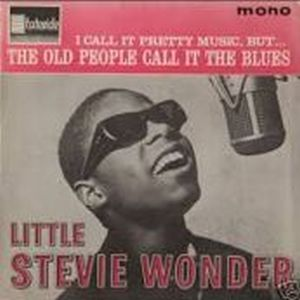
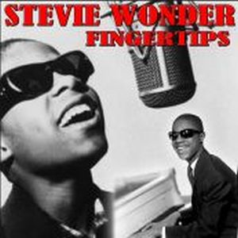

Stevie Wonder did debut with The Jazzsoul of Stevie Wonder at the age of 11 years old, was a beginning which showed their amazing skills playing the drums, bongos, harmonica and keyboards. Also demonstrated his skills as a composer on some issues.
Disco with a touch of jazz instrumental sounds advanced for its time. Berry Gordy renamed him with Little Stevie and also decided to show the small facet instrumentalist Stevie, pending a mature voice, was still of child-this child prodigy.
With the production of the composer also for Motown, Clarence Paul, a producer in the early years of the Temptations and co-composer of some of the hits of Stevie, and others great artist as Marvin Gaye.
 